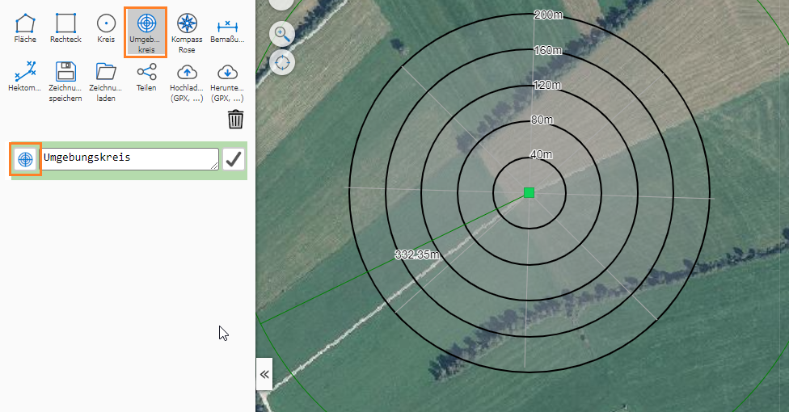
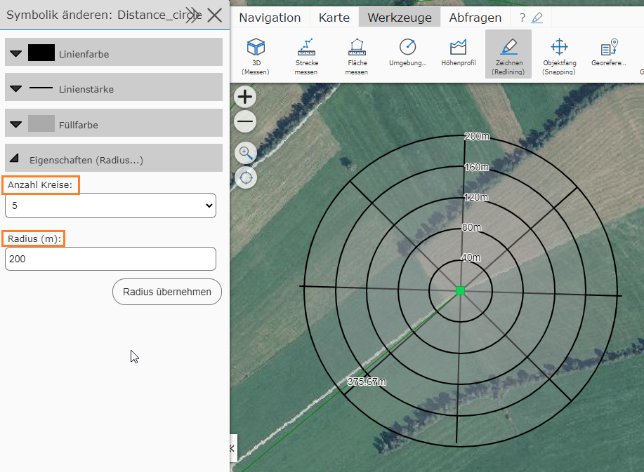
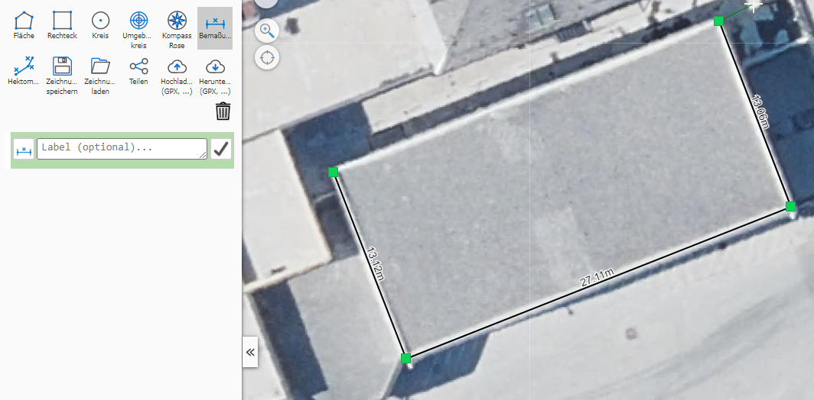
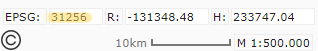
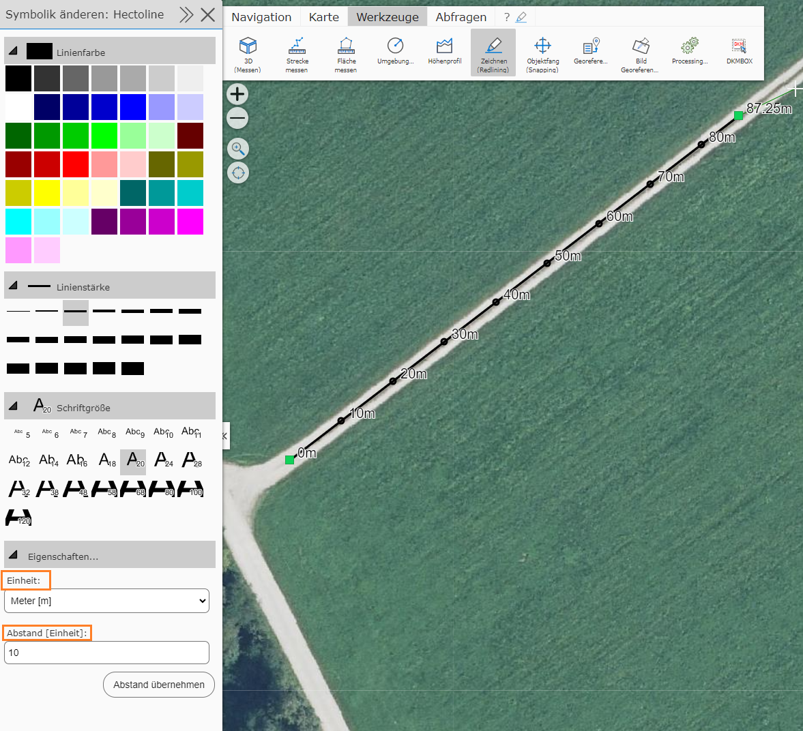
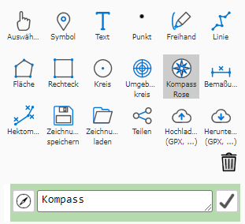
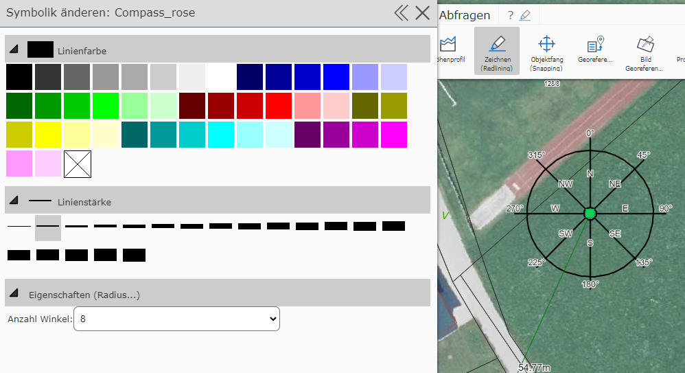

Special Tools
In addition to lines, polygons, freehand, text, rectangles, and circles, there are also more specialized graphics, which are covered here.
Buffer Circle
With this tool, a circle with a certain radius around a center point can be defined. In addition to the actual buffer circle, circles with intermediate steps are also shown and labeled:


The result can be used for distance analyses.
Dimension Line
With this tool, a (poly)line can be drawn, in which each segment is labeled with its corresponding length in meters:

Note
The length shown is always calculated live from the vertices in the current map coordinate system. If you transfer the drawing (by saving and loading) into a map with a different coordinate system, the values may differ. This applies particularly to all maps that use WebMercator, since there can be significant distortion here. Which coordinate system is used can be read at the bottom left of the map viewer.

Chainage Line
With this line, intermediate points are marked and labeled at a predefined distance (e.g. every 100m):

Meters [m] and kilometers [km] can be specified as the display unit.
Note
Just as with the dimension line, the distance points here are also calculated live and always relate to the current map coordinate system. If you insert the drawing into different maps, deviations may occur!
Compass
A new addition to map markup is the compass special tool.

If you insert one, you have the option under Edit symbology to adjust the color, line thickness, and number of angles accordingly.
